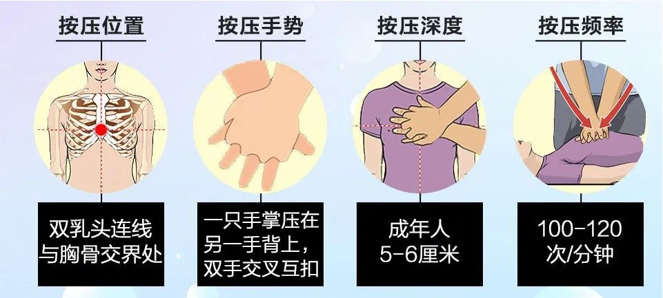

妈妈洗澡突然触电！孩子上演教科书式操作CPR
意外触电如何应急处理？近日，深圳一位高二女生“教科书式”的急救方式获网友点赞。在深圳市龙岗区45岁的余女士下夜班回到家洗澡时突然触电，倒地不醒。这时家里没有其他大人，只有两个十几岁的孩子。听到妈妈的叫声，姐姐迅速打开卫生间的门，发现妈妈仰面躺在地上，手里抓着花洒。姐姐很慌张，但基于学校教导的急救常识，她意识到妈妈可能触电了。她阻止闻声过来的妹妹进入卫生间，并大声叫喊妈妈。见妈妈没有反应，姐姐果断先跑到电闸处把电断了。随后再进入卫生间，看到妈妈仍昏迷不醒，她立即拨打120急救电话。
120接到报警后，立即调派深圳市宝兴医院急诊科出诊在120车上，急救医生夏涛第一时间联系上报警人，并在简单询问了现场情况后，在电话里鼓励和指导女孩对她妈妈进行心肺复苏（CPR）。
女孩说：“作为第一目击者，当时我其实跟妹妹一样很惊慌，我搬不动妈妈，只能尽量先把她的身体放平。起初，我怕造成二次伤害不敢动手，但在急救医生的电话指导下，尝试心肺复苏。”
赶到现场之后，医生将患者转移到客厅宽敞的地方，进行了一系列治疗，女孩妈妈最终恢复心跳与呼吸。随后，余女士被送往当地医院急救。经过治疗，余女士8月2日康复出院。
给这个勇敢机智的小女孩点个赞！！！
学会正确使用心肺复苏，关键时刻，也许能够救家人一命！
CPR第一步：识别和启动急救
判断患者意识
双手拍患者肩膀，在耳侧呼唤患者，看是否有反应。
求助、呼叫120
寻求周围人帮助，拨打120，并让人帮忙找附近的AED（自动体外除颤器）。
判断患者心跳
若患者无呼吸或呼吸不正常（如喘息），同时用2-3根手指按压患者的颈动脉，若没有脉动，说明心脏骤停，需要马上开始心肺复苏。
CPR第二步：胸外按压30次
用力快速胸外按压30次
让患者仰卧在平实的硬质平面上，头部与躯干处在同一平面。交叠双手，上身前倾，双臂伸直，垂直向下，用力并有节奏按压30次。

注意事项
若患者是老人，应避免用力过大，损坏骨头，甚至进一步危及内脏。
CPR第三步：人工呼吸2次
一手置于患者额部，向下压；另外一只手放在患者下颌处，向上抬。注意嘴角与耳垂连线与地面垂直。
清除患者口腔中的异物（如假牙或呕吐物等）。
捏住患者鼻子，用嘴包住患者的嘴，快速将气体吹入。
吹气的量，只需按照平时呼吸的量即可。每次吹气，持续大约1秒。吹气时，看到患者胸腹部有微微起伏即可。
持续重复第二步 + 第三步
30次胸外按压 + 2次人工呼吸
若出现以下情况，可停止CPR：
CPR生效，患者恢复了心跳、自主呼吸与脉搏搏动，患者有反应或呻吟。
CPR无效，持续超过30分钟的CPR后，患者的呼吸与脉动都没有恢复正常，患者瞳孔散大固定。
找到自动体外除颤器或有专业的医护施救人员赶到。
原文编辑: EHS资讯
原文链接: https://ehsinfo.cn/2020/08/08/触电心肺复苏.html
版权声明: 转载请注明出处(必须保留作者署名及链接)